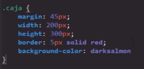
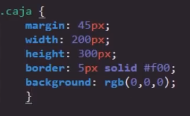
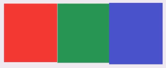
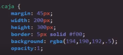
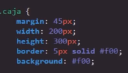
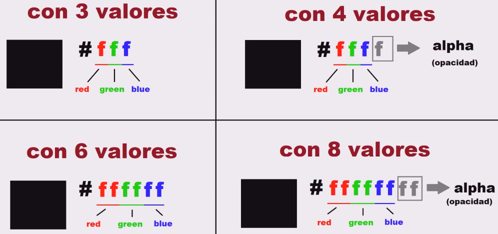

Colores CSS
Los colores son quizás uno de los temas más importantes dentro de lo que es el diseño de una página web, por lo tanto CSS al ser un lenguaje web basado en la implementación de los diseños es capaz de utilizar toda la gama de colores disponibles en diferentes formatos, de esa forma adaptándose a cualquier necesidad que pudiese surgir en el diseño de una página web.
A continuación se desglosan los principales formatos de colores aceptados por CSS, sin embargo para obtener un listado completo de los códigos de color basta con hacer una búsqueda de los códigos de color HTML o ingresar a este tutorial de colores CSS donde se define en profundidad todas las características y funcionalidades de estos en CSS.
Formatos de colores
Nombre del Color
-
Una de las formas más simples de definir el color de un elemento es simplemente utilizando su nombre, cabe resaltar que como todo lenguaje de programación su sintaxis está escrita en inglés, por lo que es necesario utilizar el nombre de los colores en inglés
En este enlace se puede encontrar el listado de todos los nombres de colores disponibles en CSS
Nota: Esta forma de definir los colores no es lo más recomendable, ya que al aplicar los colores de esta forma el navegador es el que aplicará el tono de color que tenga definido por defecto con ese nombre, tonalidad que puede variar al ingresar desde un navegador diferente, por lo que es muy posible que ingresando desde otros navegadores los tonos de colores de la página sean otros.

RGB
-
En el área de la tecnología los colores primarios no son el amarillo, azul y rojo, como en el mundo del arte, para las computadoras los colores primarios son el rojo, verde y azul, esto ya que mezclando estos tres las computadoras son capaces de crear cualquier otro color.
Para lograr esto las computadoras asignan un valor a estos tres colores en una escala, en la cual mientras mayor es el valor de cada color mayor es su intensidad en la mezcla, definiendo así que el valor mínimo de la escala es "0" mientras que el máximo es "255".

En RGB cada valor define un color:
El primer número define el color Rojo
El segundo número define el color Verde
El tercer número define el color Azul
Ejemplo

Nota: Para poner uno de estos colores en su intensidad máxima simplemente se le asigna el valor máximo (255) mientras que a los otros colores el valor mínimo (0), a su vez si se desea generar un tono más oscuro simplemente basta con bajar el valor del color en cuestión, por ejemplo (150).
Nota: Por otro lado en este formato el color negro es (0,0,0) es decir todos los colores en el valor mínimo mientras que el color blanco es (255,255,255) es decir todos los colores en el valor máximo, y por último la escala de grises se logra con todos los valores igualados ejemplo (150,150,150).
RGBA
-
Este formato de color realmente es una variante de RGB, diferenciándose con la inclusión de un cuarto valor llamado "alpha", el cual representa la "opacidad" del color, es decir la transparencia del color, a la cual se le asigna un valor mínimo de "0" en el cual el color es totalmente transparente y "1" donde el color es completamente visible.
En otras palabras RGBA es un formato con el mismo funcionamiento de RGB pero con la capacidad de definir una transparencia para el color.

Hexadecimal
-
Este formato de colores es el más complejo debido a que se basa en el código de numeración hexadecimal, en el cual se utilizan 16 símbolos para numerar, estos símbolos están conformados por los números del "0" al "9" y las letras de la "A" a la "F", con este código de numeración se crea un valor para cada color manteniendo el formato de colores primarios web (rojo, verde y azul) donde nuevamente :
El primer valor define el color Rojo
El segundo valor define el color Verde
El tercer valor define el color Azul

Una característica de la empleación del formato hexadecimal es que se puede emplear los valores de diversas formas para definir los colores web:

Nota: En CSS es necesario incluir el hashtag (#) al principio para definir el código hexadecimal como tal.